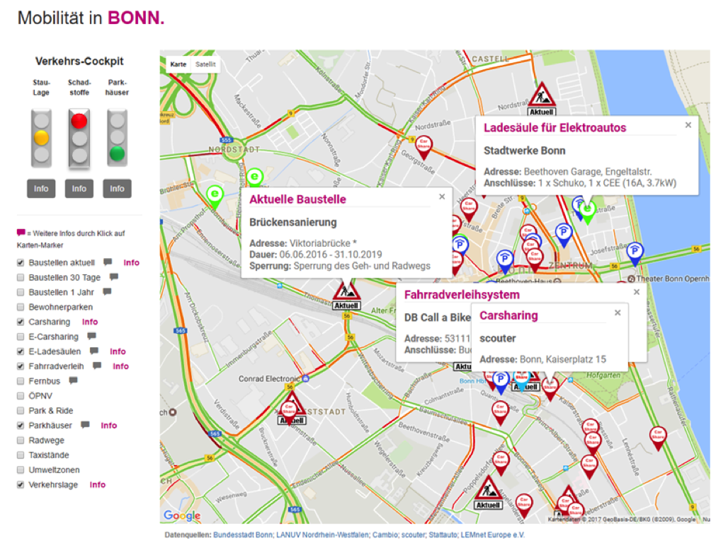

Dem Stau entkommen
OpenData trifft Nachhaltige Mobilität
mobil-in-bonn.de
Die Verkehrssituation in deutschen Großstädten ist kritisch. Immer wieder werden international anerkannte Grenzwerte für gesundheitsschädliche Feinstaub-Emissionen überschritten. Auch von einer Reduzierung verkehrsbedingter Treibhausgase um die von der Staatengemeinschaft beschlossenen 30% sind wir noch weit entfernt. Der motorisierte Individualverkehr kann daher in der bestehenden Form nicht in die Zukunft fortgeschrieben werden.
Insbesondere Kommunen sind hier gefragt, über ihre Verkehrskonzepte zu informieren, sie in Frage zu stellen und den Bürgerinnen nachhaltige Alternativen anzubieten.
Kommunen können vorhandene Datensätze nutzen, um
- über die aktuelle Verkehrslage zu informieren;
- Warnungen bei der Überschreitung von Grenzwerten auszusprechen;
- Bürgern zu zeigen, dass es viele Möglichkeiten gibt, auf nachhaltige Verkehrsmittel umzusteigen.

Das Projekt „OpenData trifft Nachhaltige Mobilität!” in Bonn setzt genau dort an und bietet auf seinem Portal Informationen und Hilfe in folgenden Bereichen:
Die Verkehrslage
Im Mittelpunkt steht das Verkehrs-Cockpit. Anhand geeigneter Daten können Bürgerinnen über die aktuelle Verkehrs- und Umweltbelastung informiert und beim Überschreiten von Grenzwerten zum Umstieg auf öffentliche Verkehrsmittel aufgefordert werden.
Die Alternativen
Angebote und Umfang alternativer Verkehrsmittel müssen oft mühsam recherchiert werden. Viele Bürger sind nur unzureichend darüber informiert, dass es vielfältige Möglichkeiten gibt, auf öffentliche oder andere nachhaltige Mobilitätsangebote umzusteigen.
Deshalb werden alle Angebote übersichtlich auf einer Seite zusammengefasst und mit weiteren Hintergrundinformationen zu den einzelnen Anbietern versehen.
Die vom Open Data Portal der Stadt Bonn bereitgestellten Daten beinhalten u.a.:
- Staudaten
- Parkhausbelegungen
- Baustellen
- Park & Ride Parkplätze
- Umweltzonen
- Carsharing
Die Bürgerinnen: Wenn Autofahrer in kritischen Stauzeiten auf nachhaltige Verkehrsmittel umsteigen, verbessert sich die Lebensqualität in ihrer Stadt für alle erheblich.
Die Kommune: Dieses OpenData-Konzept lässt sich mit überschaubarem Aufwand für jede Stadt realisieren.